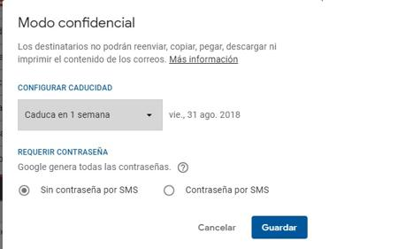

NOTICIAS DE Informatica
Cómo mandar mails que se autodestruyen desde Gmail
Ya está disponible la nueva función del servicio de Google desde donde además se puede impedir que los destinatarios se descarguen o impriman los mensajes
Lo incógnito y lo privado. Las comunicaciones que se autodestruyen. Mientras las conversaciones de los seres humanos cada vez más se desarrollan en foros de internet de toda índole, las empresas de tecnología empiezan a incorporar a sus servicios funciones que prometen ciertas garantías de que sus mensajes vana circular por cauces más protegidos. Una de las medidas que se está extendiendo con más fuerza en las aplicaciones de mensajería y servicios de correo electrónico es la posibilidad de compartir información con fecha de caducidad (desde un día hasta cinco años). Gmail, uno de los principales gestores de correo electrónico, ha añadido el modo confidencial, una intersante función que permite, además, impedir que se reenvíen o se puedan descargar los archivos sin una contraseña. Esas credenciales se pueden enviar al destinatario por SMS o por correo electrónico. Esta nueva función posibilitará proteger los datos incluso cuando la cuenta de correo del receptor haya sido secuestrada y el mensaje se encuentre aún activo. Esto es posible mediante una función que permite solicitar autenticación adicional a través de un mensaje de texto para ver un email, lo que, además, reduce el riesgo de compartir información confidencial accidentalmente con las personas incorrectas. Esta función se puede utilizar tanto en la versión de la aplicación para dispositivos con sistemas operativos iOS y Android, así como desde la versión para navegadores web desde un entorno PC. Para poder enviar un mail en modo confidencial hay que seguir estos pasos:

1.- Pulsar en «Redactar» para abril una nueva ventana desde donde rellenar el contenido
2.- Luego, hay que pulsar en el botón «Activar o desactivar modo confidencial» que se encuentra ubicado en la parte inferior derecha de la ventana de mensajes.
3.- Si ya has activado el modo confidencial en un correo, ve a la parte inferior de este y haz clic en «Editar».
4.- Configura una fecha de vencimiento y una contraseña. Estos ajustes afectan al texto del mensaje y a los archivos adjuntos.
5.- Si eliges «Sin contraseña por SMS», los destinatarios que usen la aplicación Gmail podrán abrir el mensaje directamente. A los destinatarios que no usen Gmail se les enviará una contraseña por correo electrónico.
6.- Si eliges «Contraseña por SMS», los destinatarios recibirán una contraseña en un mensaje de texto. Asegúrate de introducir el número de teléfono del destinatario, no el tuyo.
7.- Entonces, hay que hacer clic en «Guardar».